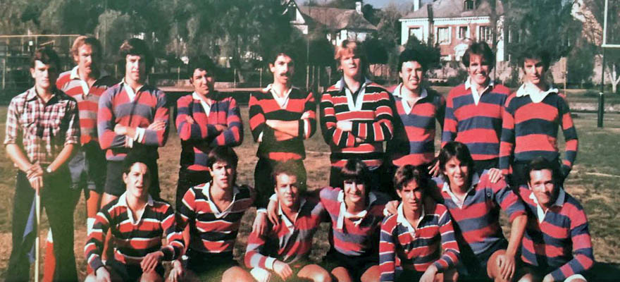

Inicios
Alguno de nuestros hitos historicos junto a sus fotografias
Rama de Rugby
1972: Con William Pérez como principal impulsor y primer entrenador, nace Craighouse Old Boys (COBS) como club de rugby de los ex alumnos del colegio Craighouse School, fundado en 1959 y que a la fecha funcionaba en Manquehue con Apoquindo, en Las Condes.
Rama de Hockey
1972: Craighouse School se convierte en colegio mixto y gracias al impulso de María Eugenia Fritis, conocida con «Miss Minnie», en compañía de la profesora Patricia Jiménez y la capitana Virginia de la Fuente, sumado al apoyo de Mrs. Joan Darling, introducen el hockey césped en el establecimiento.

Campeonatos mas importantes
Copa 2013
Después de 22 años, el plantel rojiazul vuelve a tocar el cielo en el rugby nacional bajo el mando técnico del neozelandés Mark Cross. Anteriormente, quedó subcampeón en el Torneo Súper 12 ADO de 2012.¡COBS CAMPEÓN POR TERCERA VEZ!

Copa 2018
El 15 de Junio del 2018 y tras vencer 14-0 a Old Boys en Chicureo, el equipo, siempre dirigido por Mark Cross, volvió a tocar el cielo, transformándose una vez más en el mejor de Chile ¡COBS BAJÓ SU QUINTA ESTRELLA!

Copa del Mundo
La Copa del Mundo de Rugby es la principal competición de selecciones absolutas de rugby de la World Rugby. Existen otras competiciones que también son copas mundiales de rugby: la Copa Mundial Femenina de Rugby y la Copa del Mundo de Rugby 7. Este acontecimiento deportivo se celebra cada cuatro años desde 1987 en dos fases: una fase de calificación, en la que actualmente participan cerca de 120 selecciones nacionales, y una fase final, en una sede determinada con antelación, en la que toman parte 20 equipos durante un periodo de mes y medio. El premio es la Copa Webb Ellis, por el nombre del "inventor" del rugby, William Webb Ellis. Los actuales campeones del mundo son los Springboks (Sudáfrica), que ganaron el torneo celebrado entre el 20 de septiembre y el 2 de noviembre de 2019 en Japón. Desde 2011 es el tercer evento deportivo más visto del mundo.